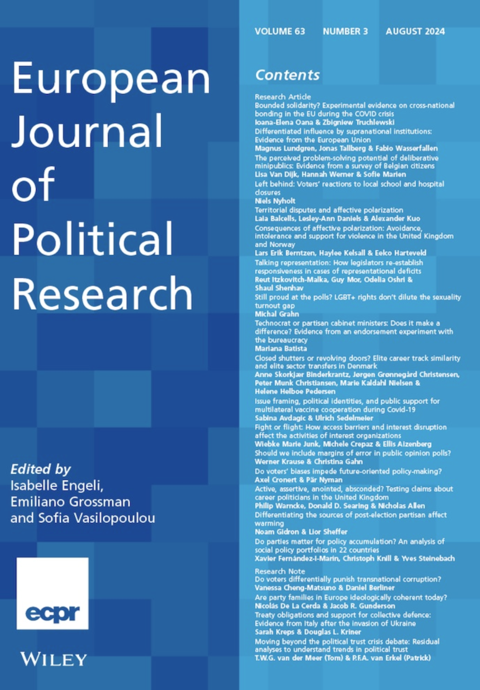
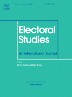

Vanessa Cheng-Matsuno
Publications

Do voters differentially punish transnational corruption?
A large literature studies whether, and under what circumstances, voters will electorally punish corrupt politicians. Yet this literature has to date neglected the empirical prevalence of transnational dimensions to real‐world corruption allegations, even as corruption studies undergo a 'transnational turn'. We use a survey experiment in the United Kingdom in 2020 to investigate whether voters differentially punish politicians associated with transnational corruption and test four different potential mechanisms: information salience, country‐based discrimination, economic nationalism and expected representation. We find evidence suggesting that voters indeed differentially punish transnational corruption, but only when it involves countries perceived negatively by the public (i.e. a 'Moscow‐based firm'). This is most consistent with a mechanism of country‐based discrimination, while we find no evidence consistent with any other mechanism. These results suggest that existing experimental studies might understate the potential for electoral accountability by neglecting real‐world corruption allegations' frequent transnational dimension. more

Null effects of social media ads on voter registration: Three digital field experiments
Civic organisations and progressive campaigns regard digital advertising as an essential method to register to vote low-participation groups, such as ethnic minorities, young voters and frequent home movers like private-sector tenants. Digital strategies appear to be promising in countries like the UK, where the registration process can be completed online, usually in less than 5 minutes, using a web link in the advert. But are typical digital campaigns effective in registering voters? To find out, we provide evidence from three randomised controlled trials: two conducted with advocacy organisations and the third run by the research team, carried out in two types of UK elections (general and local) and assigned either at the aggregate (Study 1 and Study 2) or individual (Study 3) level. Despite wide reach and relatively high rates of engagement, we find that the digital ad campaigns trialed across three studies did not affect under-registered groups' voter registrations. These null findings raise questions about commonly-used digital advertising strategies to register marginalised groups. They are consistent with other studies that report either null or minimal effects of digital ads on other types of political behaviour. more

Do text messages increase voter registration? Evidence from RCTs with a local authority and an advocacy organisation in the UK
In the wake of the Covid-19 pandemic, text messages have become an increasingly attractive tool of voter registration. At the same time, in countries without automated registration, advocacy organisations play a more prominent role in supplementing the efforts of official bodies in registering voters. However, most available, robust evidence on whether voter registration campaigns work is based on campaigns conducted by official bodies charged with electoral registration. We present the results of two RCTs that aimed to increase voter registration in the UK using SMS-text messages, relying mainly on behavioural messaging. One was conducted by a local authority, while the other was implemented by an issue advocacy organisation that had no prior involvement in voter registration. In line with previous findings, the local authority's text messages resulted in an increased registration rate of eight percentage-points, which translates into a three percentage-point increase in voter turnout. However, the advocacy organisation's text messages neither increased voter registration, nor turnout, no matter whether the text message offered a personal follow-up conversation, or not. Given that many voter registration campaigns are run by advocacy organisations and text messages are an increasingly important mobilisation tool, this raises questions about the scope conditions of existing findings. more
Working Papers
When Legislators Do Not Differentiate: A Field Experiment on British MPs' Responses to Constituent Policy Queries (Revise & Resubmit)
How do legislators respond to constituent policy queries? Existing research suggests that legislators vary their responsiveness and tailor response content depending on constituent congruence, raising normative concerns about legislator-constituent communication. We report results from a pre-registered audit study of UK MPs which is the first to test whether legislators in party-centred parliamentary democracies vary substantive response rates and content depending on constituent-party policy congruence. We theorize that electoral incentives lead MPs to respond more to congruent constituents, and to place more emphasis on self over party when doing so. Our audit study uses real constituents as confederates allowing better measurement of substantive responses. We find little evidence that constituent-party congruence affects MPs' responsiveness or the personal versus party emphasis of their replies. These null findings refine understanding of legislator behaviour in parliamentary systems and are normatively encouraging regarding the role that legislator-constituent policy communications can play in parliamentary democracies. more
Government, Interrupted: Politicians' Spending in Times of Political Crisis
This paper develops and tests a theory of how local politicians adapt to national political crises, such as presidential impeachments or resignations, in weak-party democracies. When partisan cues collapse, informal alignments determine executive-local linkages that affect local decision-making and the quality of the provision of public goods and services. I test the theory by leveraging the exogenous timing of Peru's presidential crises (2017–2025) and monthly rich expenditure data from over 1,000 district municipalities. I employ an event study design that uses the constitutional fact that local mayoral election cycles are distinct from national election cycles. The findings aim to shed light on how subnational actors adapt to national political crises when party cues collapse through the establishment of informal alignments. more
Vulnerabilities, Attachment, and Irregular Migration: Evidence from El Salvador
Understanding Women's Experiences in the UK Civil Service
DEMBUG: Debugging Democracy: How Institutions Shape the Quality of Political Decision-Making
Legacy Bureaucrats and Their Careers: Evidence from Guatemala
Is Social Mobilisation Gendered? Evidence from Spillover Experiments across Three Democracies
Some of the foundational texts in political behaviour claim, based on concordance in turnout, and self-reports of political discussion between spouses, that men exerted a greater influence on women's political behaviour than the other way around. Given that attitudes towards gender roles have become more egalitarian over time in Western democracies, we ask whether women are really more receptive to political influence within the household than men. We investigate this question using the case of intra-household mobilization across three democracies: the United States, the United Kingdom, and Denmark. We re-analyse a sample of 7 previously conducted randomized field experiments that assigned one household member to receive campaign stimuli (or to control/placebo), in order to estimate spillover effects on the untreated household member. We assess the extent to which within-household spillovers vary conditional on the gender of both household members in two-voter, opposite-sex households. While, overall, we find no difference in the effectiveness of indirect mobilization efforts on the propensity to vote between women and men, in cases where not only the stimulus was randomly assigned, but also the specific household member to be contacted was randomly chosen, women exert a greater influence on their partner's turnout than men. more